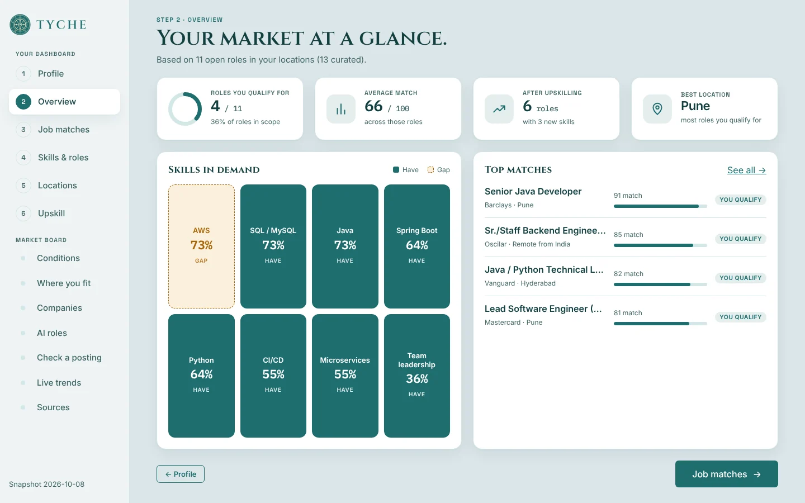
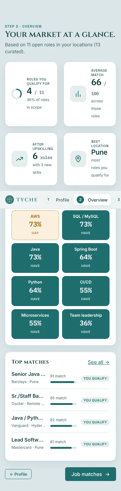

Location fit
Scores each place on hiring momentum, pay uplift against your current pay, visa ease, and how many matching roles are open there.
Job market analysis for engineers
Tyche compares your profile with the hiring market. Enter your skills, experience, target level and current pay, or upload a resume. It ranks cities and countries, lists the companies hiring for you, and shows which skills employers want that you don't have yet.

How it works
Upload a resume (PDF, DOCX or TXT) or type your skills, then pick the places you'd move to. The resume is parsed in memory and never stored.
See demand for your skills, the role families hiring most, pay and openings per location, and your best-match jobs with a score and plain reasons.
Get an upskilling plan built from the skills hiring employers ask for most, with how many more roles each one would open up.
Features
Scores each place on hiring momentum, pay uplift against your current pay, visa ease, and how many matching roles are open there.
Scores employers on skill overlap, seniority, location and open roles. Flags stretch roles and roles below your level.
Year-on-year demand growth for five AI roles, from agentic AI engineer to MLOps, with each role's usual skills marked against yours.
Ranks skills by the share of hiring employers that ask for them, and marks the ones you already have.
Paste a job description to get the skills it asks for, split into required and nice to have. "SpringBoot" and "Spring MVC" both map to Spring; "JavaScript" doesn't count as Java.
Postings per company over the last four weeks against the four before, computed from ingested live postings.
Screens
Every step fits on one laptop screen. Long lists page inside their card, and details open in a dialog. Select a screen to see it full size.

On the go
The same dashboard reflows to a single column, so you can check a posting or your matches away from your desk.
Data
Pay bands, visa thresholds and hiring momentum for 11 locations, and 13 employers with roles checked by hand in October 2026. Each figure is traced to a public source, listed alongside the data.
An ingestion script pulls jobs from the Adzuna API, extracts skills from each description, and stores them in Postgres (Neon in production, a local SQLite file otherwise). Trends are computed from that table over time.
How it's built
Python and FastAPI. Scores locations and companies, parses resumes and postings in memory, and serves the market data.
React, TypeScript and Vite. Every step fits on one laptop screen, reflows for phones, and follows your light or dark setting.
Postgres on Neon stores live postings pulled from the Adzuna API, next to the hand-checked snapshot.
The source code is private for now.